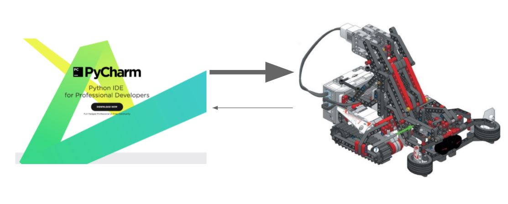

-
CSSE 120 - Lego Mindstorms
Implemented code that controlled the functions of a Lego Mindstorms EV3 Robot via GUI, remote control beacon, and pixy camera. here.
-
CSSE 220 - Bubble Bobble

Led 2-person team in designing a game equivalent to the classic game, “Bubble Bobble”.
-
CSSE 230 - Editor Trees
Collaborated in a 2-member team to create an AVL-Tree that efficiently added/removed nodes, handled rotations, and split and/or concatenated trees.
-
CSSE 232 - 16-Bit Multiprocessor

Worked in a 4 -member team to create a 16-bit multicycle processor. Created a unique instruction set, data path, RTL, and control diagram that allowed the processor to compute various algorithms.
-
CSSE 371 - SRE Client Project
Managed a 4-member team that developed an extensive design for software to be used by Terre Haute Labs. Held several elicitation interviews with stakeholders to gather needs and features of the domain. Created use cases and prototypes to cover the features for the system.
-
CSSE 374 - CM2W Startup Project

Worked in a 4 -member team to create a 16-bit multicycle processor. Created a unique instruction set, data path, RTL, and control diagram that allowed the processor to compute various algorithms.